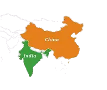
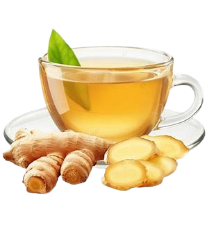
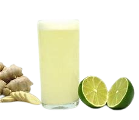

Plantio
O plantio do gengibre é feito a partir do rizoma, a parte subterrânea conhecida como raiz. Para isso, utilizam-se pedaços de gengibre com brotos (“olhos”), que podem ser cortados em partes menores, desde que cada uma tenha ao menos um broto. O plantio deve ser realizado em solo leve, fértil e bem drenado, enterrando os pedaços a cerca de 3 a 5 cm de profundidade, com os brotos voltados para cima. A planta se desenvolve melhor em clima quente, com meia-sombra e solo mantido sempre úmido, sem encharcamento.
Época
A melhor época para plantar gengibre é no início da primavera ou no começo do período chuvoso. No Brasil, isso normalmente ocorre entre setembro e novembro, quando as condições de temperatura e umidade são mais favoráveis.
Floração
A floração do gengibre ocorre em condições específicas de clima quente e úmido, geralmente após o completo desenvolvimento da planta. Suas flores surgem em hastes separadas, com formato de espiga, apresentando cores que variam entre verde, amarelo e tons avermelhados. Embora seja cultivado principalmente pelo rizoma, a floração é um indicativo de maturidade e boas condições de cultivo.
Detalhes da espécie
- Gengibre comum (Zingiber officinale): espécie mais cultivada, usada na culinária e na medicina; rizoma aromático e sabor picante.
- Gengibre ornamental (Zingiber zerumbet): conhecido pelo valor decorativo; flores exóticas em formato de cone, com coloração avermelhada.
- Gengibre shampoo (Zingiber zerumbet): variedade do ornamental; produz uma substância líquida usada tradicionalmente como shampoo natural.
- Gengibre azul (Dichorisandra thyrsiflora): apesar do nome, não é um gengibre verdadeiro; destaca-se pelas flores azuis intensas.
- Gengibre tocha (Etlingera elatior): espécie tropical ornamental; flores grandes, vistosas, em tons de rosa ou vermelho.
- Gengibre borboleta (Hedychium coronarium): flores brancas e perfumadas, muito usadas em paisagismo e perfumaria.
Tabela nutricional
| Quantidade por porção | %VD* | |
|---|---|---|
| Valor energético | 80 kcal (335 kJ) | 4% |
| Carboidratos | 18 g | 6% |
| Proteinas | 1,8 g | 2% |
| Gorduras totais | 0,8 g | 1% |
| Gorduras saturadas | 0,2 g | 1% |
| Gorduras trans | 0 g | ** |
| Fibra alimentar | 2 g | 8% |
| Sódio | 13 mg | 1% |
Beneficios de consumo
O gengibre é um alimento funcional bastante valorizado por seus diversos benefícios à saúde, sendo utilizado tanto na alimentação quanto na medicina tradicional. Rico em compostos bioativos, como o gingerol, ele apresenta ação anti-inflamatória e antioxidante, ajudando a combater os radicais livres e contribuindo para a prevenção do envelhecimento precoce e de doenças crônicas.
Além disso, o gengibre auxilia na digestão, aliviando desconfortos como náuseas, gases e indigestão. Também pode contribuir para o fortalecimento do sistema imunológico, ajudando o organismo a se defender de gripes e resfriados. Outro benefício importante é o seu potencial termogênico, que pode acelerar o metabolismo e auxiliar no controle de peso quando associado a hábitos saudáveis.
Receitas
1. Chá de gengibre 🍵
Ingredientes:
- 1 colher (sopa) de gengibre fresco ralado ou em rodelas
- 500 ml de água
- colher (sopa) de mel (opcional)
- Suco de ½ limão (opcional)
Modo de preparo:
Em uma panela, coloque a água e leve ao fogo até começar a ferver. Adicione o gengibre e deixe em infusão por cerca de 5 a 10 minutos. Desligue o fogo, tampe e deixe descansar por mais alguns minutos para intensificar o sabor. Coe o chá, adicione o mel e o limão, se desejar, e sirva quente.

2. Suco de gengibre com limão 🍋
Ingredientes:
- Suco de 2 limões
- 1 pedaço pequeno de gengibre (cerca de 2 cm)
- 300 ml de água gelada
- 1 a 2 colheres (sopa) de açúcar ou mel
- Gelo a gosto
Modo de preparo:
Descasque o gengibre e corte em pedaços menores. Coloque no liquidificador junto com o suco de limão, a água e o açúcar ou mel. Bata bem até misturar tudo. Se preferir, coe o suco para uma textura mais leve. irva com gelo.

3. Frango com gengibre 🍗
Ingredientes:
- 500 g de peito de frango cortado em cubos
- 1 colher (sopa) de gengibre fresco ralado
- 2 dentes de alho picados
- 3 colheres (sopa) de molho shoyu
- 1 colher (sopa) de óleo ou azeite
- Sal e pimenta-do-reino a gosto
- Cebolinha (opcional, para finalizar)
Modo de preparo:
Tempere o frango com sal e pimenta. Em uma panela ou frigideira, aqueça o óleo e refogue o alho e o gengibre até liberar aroma. Adicione o frango e cozinhe até dourar por todos os lados. Acrescente o molho shoyu, misture bem e deixe cozinhar por mais alguns minutos até o frango ficar bem cozido e suculento. Finalize com cebolinha, se desejar, e sirva quente.
Referencias
- Organização Mundial da Saúde (OMS).
- Ministério da Saúde.
- Harvard T.H. Chan School of Public Health.